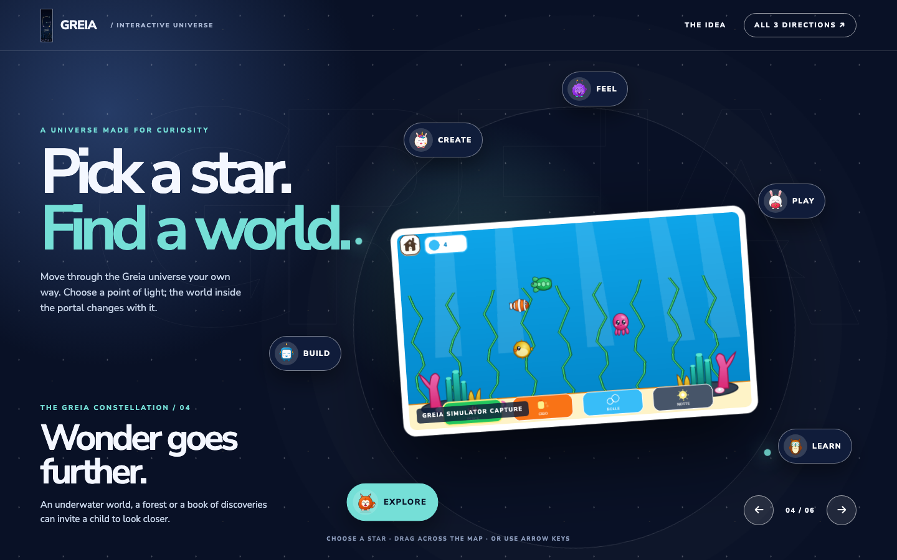
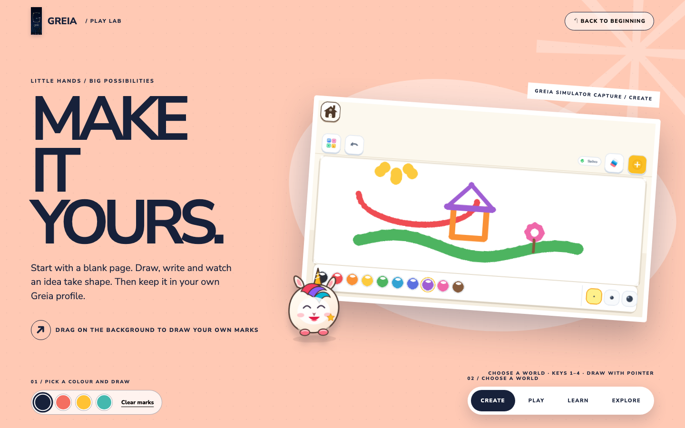

greia
greiaHow do
you enter
Greia?
The familiar Greia constellation is the center of each concept. Beyond it: three very different ways to tell the product’s story and let people play.
↓Three ways in.
Each page is interactive. Try the controls; the differences are in how the site behaves as much as how it looks.
The Portal
A cinematic, editorial journey from the actual boot mark into Greia’s living product world.
Enter the story ↗ 02 / Explore
02 / ExploreOrbit
A spatial universe. Pick a character’s star and the central scene transforms around your choice.
Explore the orbit ↗
03 / PlayPlay Lab
Step through the boot screen, draw on the page, change worlds, and make a little mess.
Enter the lab ↗
Modern motion.
Still recognizably Greia.
These studies use the existing boot identity, six-character cast, accepted palette, Nunito typography and genuine development screenshots. They are website concepts for discussion, not a product release or proof of device behaviour.